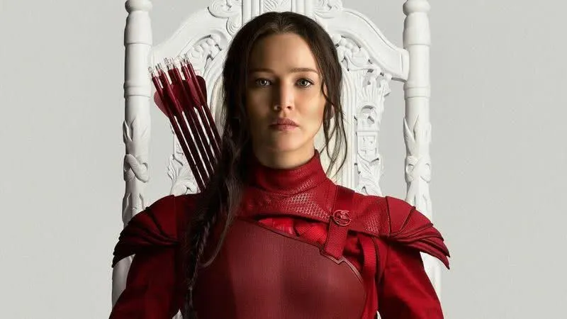
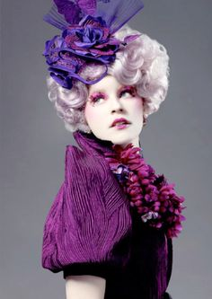
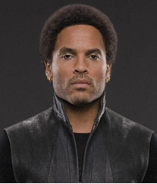
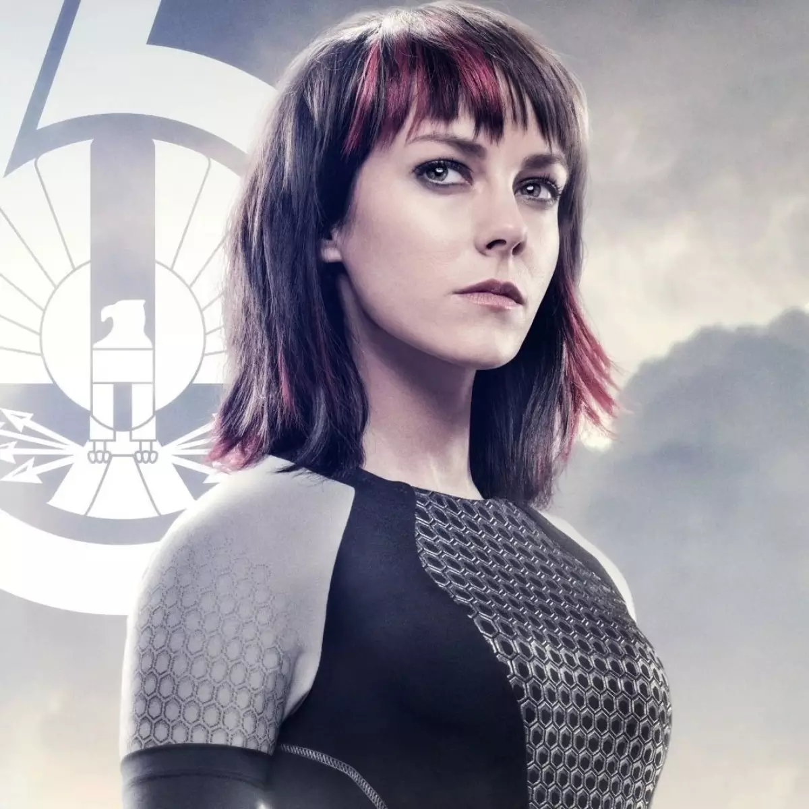
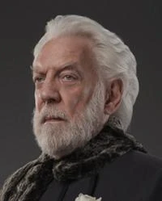
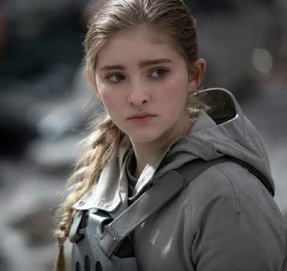
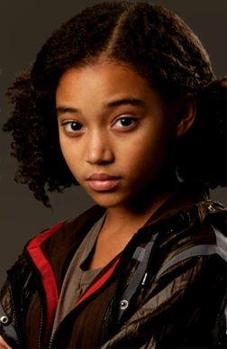

Katniss Everdeen
Vitoriosa dos Jogos e excelente arqueira, torna-se o símbolo da resistência como o Tordo
Peeta Mellark
Vitorioso dos Jogos, destaca-se pela inteligência, gentileza e habilidade com as palavras.
Gale Hawthorne
Excelente caçador e arqueiro, ajuda Katniss e participa da resistência contra a Capital
Haymitch Abernathy
Vencedor dos Jogos, usa sua experiência e estratégia para orientar Katniss e Peeta.

Effie Trinket
Representante do Distrito 12, é conhecida por sua personalidade e aparência extravagantes.

Cinna
Estilista de Katniss, usa sua criatividade para ajudá-la a se tornar o símbolo do Tordo.
Finnick Odair
Vencedor dos Jogos e habilidoso com o tridente, participa da resistência contra a Capital.

Johanna Mason
Vencedora dos Jogos, é conhecida por sua coragem, habilidade de luta e personalidade forte.

Presidente Snow
Líder da Capital, controla Panem através do poder, do medo e da repressão.

Primrose Everdeen
Irmã de Katniss, é uma jovem dedicada à medicina e muito importante para a protagonista.

Rue
Participante do Distrito 11, destaca-se por sua agilidade e habilidade para se esconder nas árvores.
Plutarch Heavensbee
Estrategista da resistência, usa sua posição na Capital para ajudar os rebeldes.